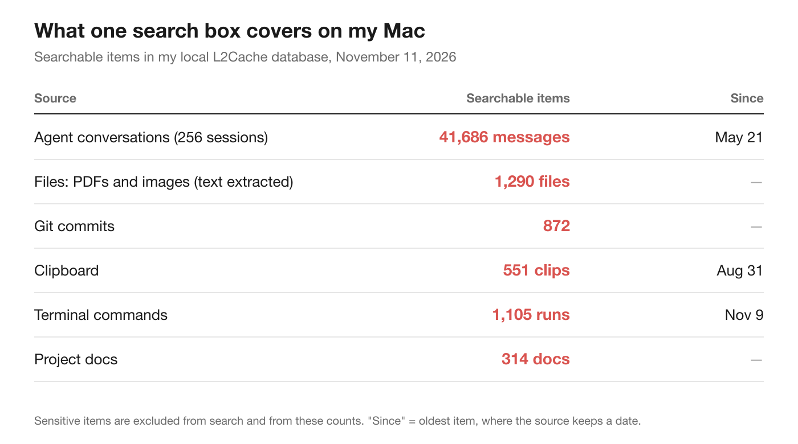
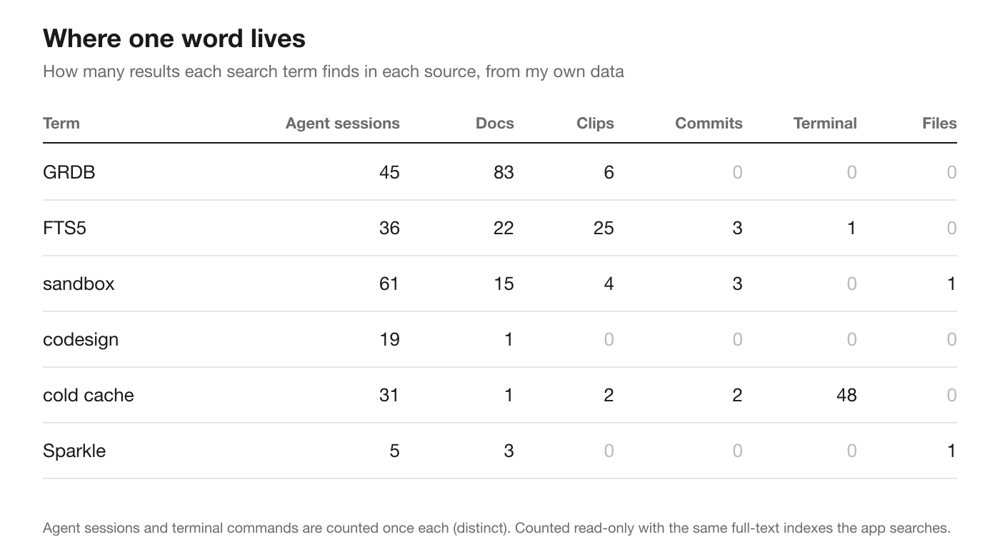
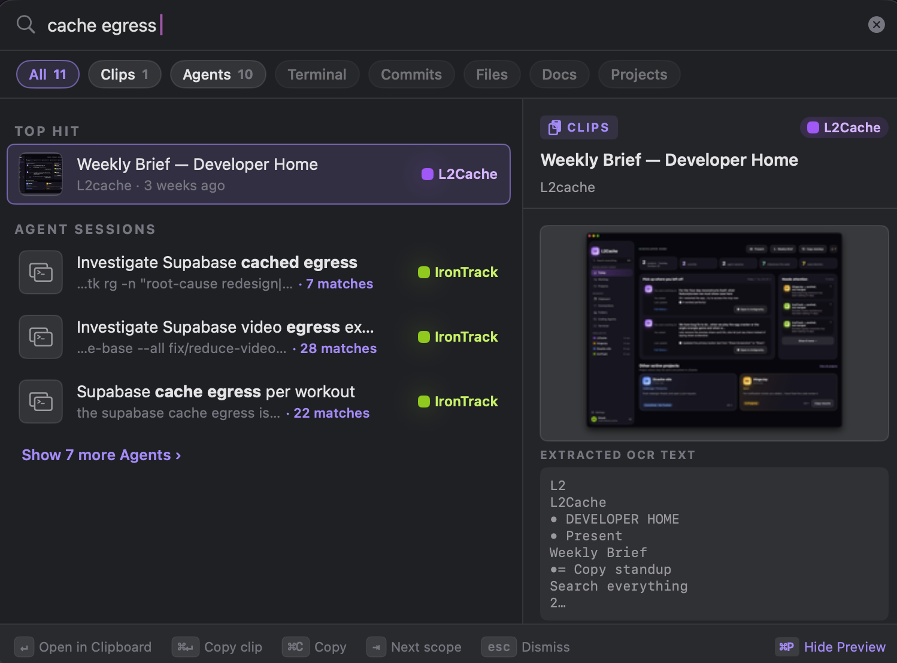
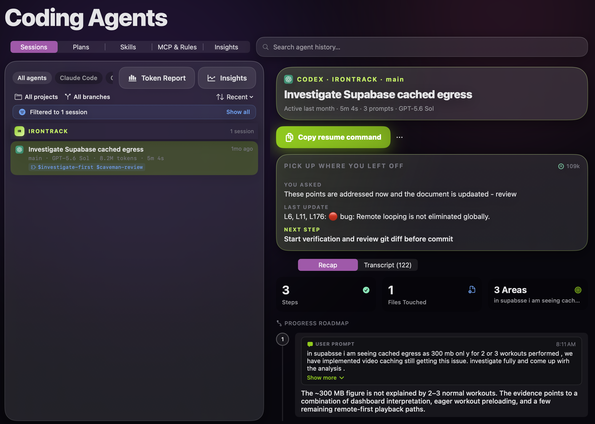

Seven real "where did I see that?" questions, asked of one search box instead of six apps.
Every developer I know has a version of this moment. You've solved this exact problem before. You remember the shape of the fix and roughly when. What you don't remember is where it lives.
Was it in a Claude Code session? A command you ran in the terminal and never wrote down? A commit message? A screenshot of an error you took to "look at later"? The PDF of the vendor docs? Something you copied from Stack Overflow at 11 pm?
So you search in six places, each with its own search box, its own syntax and its own idea of what "recent" means. Half of them can't search at all: there's no search box for your clipboard history, and history | grep only covers the shell you're in.
I build a Mac app that keeps all of those in one local database, and it has one search box over all of them. I wanted to know whether that actually changes anything day to day, or whether it's a nice demo. So I ran an experiment on myself.
Before searching anything, I counted what one search box covers on my Mac. These are real counts from my own local database, read-only, with sensitive items left out.

The agent conversations dwarf everything else: 41,686 messages across 256 sessions since May: Claude Code, Codex, Antigravity, Copilot and Grok. That's the part of my working memory that grew fastest this year, and it's the part with the worst search story. Agent transcripts are JSONL files buried in hidden folders. You can grep them, but you get raw JSON back, not the moment in the conversation where the answer was.
The files row is my Downloads and Documents folders, which I added to L2Cache's watched folders: 457 PDFs and 833 images. Text is pulled out of them on my Mac (PDF text directly, images with Apple's on-device text recognition), so a picture of an error dialog is searchable by the words in the dialog.
The terminal row only holds the last few days of commands on this Mac, not months. It's the youngest source, which matters for the results below.
Then I tried a quick test: pick a few words I know I've worked on, and count where each one shows up.

Three things jumped out.
The answer is almost never in only one place. "FTS5" (the SQLite full-text engine) shows up in 36 agent sessions, 22 docs, 25 clips, 3 commits and a terminal command. If I only searched my notes, or only my commits, I'd see a sliver of what I know about it.
Agent sessions are where the reasoning lives. "codesign" appears in 19 agent sessions and one doc, and nowhere else. I never wrote down how I fixed my code-signing problems; the only record is the conversation where an agent and I worked it out. The same goes for "sandbox": 61 sessions, against 3 commits. Commits record what changed. The conversations record why.
Each source has its own blind spots. "GRDB", the database library my app is built on, appears in 83 docs and 45 sessions, but in zero commit subjects. "cold cache" shows up in 48 terminal commands, almost all of them deploys of a web page with that phrase in its URL. Any single source gives you a skewed picture. Together they're close to the whole story.
Putting everything in one index raises an obvious problem: what comes first? A clip from this morning, or the agent session from three weeks ago that actually has the answer?
Here's how the search I built handles it, because the choices shaped what I found:
And when you know where you're looking, a short prefix narrows it: a: for agent sessions, t: or > for terminal, g: for commits, c: for clips, shot: or file: for files, d: for docs, and @project to scope to one project. They only count as filters when followed by a space, so searching for c:\Users still searches for the path.
I took seven questions of the kind I ask every week and typed each one into the search box, first in the All view, then with the prefix for the source I expected. One thing to know up front: I ran them right after writing this draft, so my own drafting session, the commands I'd used to count things and my notes file all contained every query word. I'll say where that got in the way, because it turned out to be the most useful result.
Question: database is locked, the SQLite error I keep running into on an app with several writers.
Where I'd normally look: Google, then scrolling old Claude sessions.
What came back: 20 results. The Top Hit was my drafting session from that afternoon. Past my own notes, it was 10 project docs and 2 files; only one older agent session matched the exact phrase, and it wasn't the fix. Found it? No. Whatever fixed it last time was never written down in those words.
Question: only-testing, from the xcodebuild flag that runs one test suite.
What came back: over 99 results in almost every source. The search treats the hyphen as a space, so it matches anything with "only" and "testing" in it. The Top Hit was an agent session that ran the command 48 times; the terminal commands came after four agent sessions. Found it? Second group. t: put the commands first. Fixed since; see below.
Question: JXA, from the decision to replace a compiled MCP server binary with a small JavaScript for Automation script.
What came back: 27 results: 9 agent sessions, 11 terminal commands, 7 docs. Found it? Top Hit: the sprint doc that records the change. With a:, the first session is the one where I set the server up. Opening a session lands on its recap, not the matching message; I had to open the transcript myself. Fixed since; see below.
Question: 254k, a context size I'd seen on a "Pick up where you left off" card and screenshotted.
What came back: 9 results. The Top Hit was a command I'd run that afternoon with "254k" in it. The screenshot was there, matched by its recognised text, in the files group. Found it? Later group. shot: made it the only result. The copy of the same screenshot in my clipboard history didn't show up at all, even with c:. Fixed since; see below.
Question: claude-mem, a GitHub repo URL I copied three days earlier while comparing memory tools.
What came back: the hyphen again: "claude" and "mem" match nearly everything I do, so over 99 results, with an unrelated command as the Top Hit. My comparison doc did come up in the docs group. Found it? The doc, yes; the URL, no. c: cut it to 13 clips, and the URL wasn't in the first seven. Fixed since; see below.
Question: f1d0be4, a short hash from a log, then the word retitle.
What came back: 6 results for the hash. The Top Hit was my notes file, because I'd pasted the hash into it; the commit was first in its own group. For the word: 22 results, 9 of them commits, with my notes file on top again. Found it? Commit group, first. Leave out what I'd written that day and it's the Top Hit.
Question: migration, first unscoped, then @L2Cache migration.
What came back: unscoped, over 99 results across every project, with a screenshot from a chat app as the Top Hit and another app's database migration as the first agent session. Scoped, the Top Hit was the command I'd used to find this app's migration tests. Did scoping help? Yes, more than anything else I tried.
Out of seven questions: the Top Hit was the answer twice (the JXA doc and the scoped migration search), three times if you ignore what I'd written that day (the commit hash). Two answers were further down (the command, the screenshot) and a prefix moved each to the top. Two were misses: the error fix, and the copied URL. The answers came from a doc, the terminal, a watched folder, git and a scoped search, not mostly from agent sessions as I'd expected.
The experiment turned up three bugs in my own search, so I fixed them before publishing and ran the affected questions again.
claude-mem only matches those two words side by side. It went from over 99 results to 36. The comparison doc leads the docs group, and c: now returns 2 clips: the copied URL and the prompt I pasted it into. For only-testing, clips fell from 22 to 2 and docs from 67 to 9. Agent sessions and terminal commands still pass 99, because they really do contain the flag, and t: still puts the commands first.c: 254k returned the clipboard copy of the screenshot, matched by its recognised text. I couldn't make it fail again, so I added a test that keeps it working.With the fixes, the scorecard moves by one: the copied URL is now found, second with c:, which leaves a single miss, the error fix. The new Top Hit for claude-mem was the bug report I'd written about it an hour earlier, which is the recency lesson again.
Recency cuts both ways. The ranking gives a fresh result a boost, which is usually right. But anything you wrote today about a thing (a note, a command, an agent session) beats the thing itself. Searches I ran right after drafting were the worst; the same searches a week later will look better.
Prefixes beat ranking for common words. t:, shot: and @project turned two near-misses and one noisy list into the right answer at the top. When a word is everywhere, telling the search where to look matters more than how it ranks.
Local beats clever. None of this needs AI or the cloud. It's SQLite full-text search over files that are already on my Mac, plus some care about ranking. Searches stay on the machine, which matters when the index holds your terminal history and every conversation you've had with an agent.
You can get some of this without any app. Search your Claude Code history with grep -rl "codesign" ~/.claude/projects. Search your shell history with history | grep, or install a shell history tool. You'll quickly see why I wanted one box: each answer comes back in a different shape, and none of them takes you to the right moment in a conversation.
Here's what the one-box version looks like for me.


The hard part of developer memory isn't storing things. It's that every source keeps its own fragment, and none of them is searchable alongside the others.
Count where your own answers live. If they're spread across six places like mine, the fix isn't more notes; it's one place to ask.
For the full tour (every source, the filters and keyboard shortcuts, and how results open), see One ⌘K search for everything you did as a developer. For searching screenshots by the text in them: Screenshot search on Mac.
L2Cache searches your agent sessions, terminal history, clipboard and screenshots together, on your Mac.
Download L2Cache for Mac